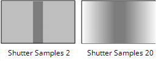

|
连接类型 |
连接名称 |
函数 |
|---|---|---|
|
输入 |
FgVecs |
如果输入序列中的运动之前已经估计过 (例如，使用 FurnaceCore 的 F_VectorGenerator 或第三方软件), 您可以向 MotionBlur 提供一个或多个向量序列，以节省处理时间。 如果背景和前景有单独的向量，您应该将它们连接到适当的输入，并将用于生成它们的遮罩提供给 哑光 输入。如果你有一组向量，你应该把它连接到 FgVecs 输入。 注意: 的 BgVecs 只有连接了所有其他输入后，才会显示输入。 |
|
BgVecs
|
||
|
哑光 |
前景的可选遮罩，可通过减少前景和背景对象之间可能发生的像素拖动来改善运动估计。 | |
|
源 |
接收运动模糊效果的序列。 |
|
控制 (UI) |
旋钮 (脚本) |
默认值 |
函数 |
|
MotionBlur 选项卡 |
|||
|
本地 GPU |
GpuName |
N/A |
显示用于渲染的 GPU 使用 GPU (如果可用) 已启用。本地 GPU 显示 不可用 当: • 使用 CPU 被选为 默认闪烁设备 在 偏好 . • 在您的系统上找不到合适的 GPU。 • 无法在选定的 GPU 上创建处理上下文，例如当 GPU 上没有足够的可用内存时。 如果可用，您可以通过导航到 偏好 并从中选择一个替代方案 默认闪烁设备 下拉列表。 注意: 选择不同的 GPU 需要重新启动 Nuke 在变更生效之前。 |
|
使用 GPU (如果可用) |
UseGPUIfAvailable |
已启用 |
启用时，渲染发生在 本地 GPU 指定 (如果可用)，而不是 CPU。GPU 和 CPU 之间的输出在 NVIDIA GPU 上是相同的，但是使用 GPU 可以显著提高处理性能。 Nuke 在 2013年底的 Mac Pro 6,1 和 2015年中的 Mac Pro 11,5 上支持 AMD gpu，运行 OS X 10.9.3 “mavericks” 或更高版本。虽然，在某些情况下，GPU 和 CPU 之间的比特级相等保持不变，但对于某些操作，这种配置可能存在精度限制。
注意:
在没有本地 GPU 的情况下启用此选项允许脚本在 GPU 上运行，只要脚本在具有 GPU 可用的机器上打开。
GPU 处理还需要某些 NVIDIA GPU 和 CUDA 驱动程序，或者在 2013年底运行 10.9.3 “mavericks” 或更高版本的 Mac Pro 6,1 和 2015年中 Mac Pro 11,5 的情况下，某些 AMD GPU 和驱动程序。有关最低要求的更多信息，请参考 帮助 > 发行说明 . |
|
快门样本 |
ShutterSamples |
3 |
设置在快门时间内用于创建输出图像的中间图像数。增加此值以获得更平滑的运动模糊，但请注意，渲染需要更长的时间。  |
|
快门时间 |
ShutterTime |
0.75 |
设置重新计时序列的等效快门时间。例如，0.5 的快门时间相当于 180 度机械快门，因此在每秒 24 帧时，曝光时间将是每秒的 1/48。 想象一个灰色矩形在屏幕上从左到右水平移动。下面的数字显示了 快门时间 影响重新计时的矩形。
|
|
方法 |
运动估计 |
依赖于脚本 |
设置计算运动估计向量的方法: • 本地 -使用局部块匹配来估计运动矢量。此方法处理速度更快，但会导致输出中出现瑕疵。 • 正规化 -使用半全局运动估计在区域之间产生更一致的向量。 注意: 从早期版本的 Nuke 默认加载的脚本 本地 向后兼容的运动估计。将新的 MotionBlur 节点添加到节点图默认为 方法 到 正规化 运动估计。 |
|
矢量细节 |
VectorDetail |
0.2 |
改变向量场的密度。向量细节越大，处理时间就越大，但向量应该越详细。 值 1 在每个像素处生成向量，而值 0.5 在每个其他像素处生成向量。 |
|
重采样 |
ResampleType |
双线性 |
设置重新计时时应用的重新采样类型: • 双线性 -默认过滤器。处理速度更快，但在更高的缩放级别下会产生较差的结果。你可以使用 双线性 在使用其他重采样类型之一生成输出之前预览运动模糊。 • Lanczos4 和 Lanczos6 -这些过滤器有利于缩小规模，并提供一些图像锐化，但需要更长的时间来处理。 |
|
哑光通道 |
MatteChannel |
没有 |
在哪里获取用于运动估计的 (可选) 前景蒙版: • 没有 -不要使用哑光。 • 源 Alpha -使用的阿尔法 源 输入。 • 源倒阿尔法 -使用的倒阿尔法 源 输入。 • 哑光亮度 -使用的亮度 哑光 输入。 • 哑光倒置亮度 -使用倒置的亮度 哑光 输入。 • 哑光阿尔法 -使用的阿尔法 哑光 输入。 • 哑光倒置阿尔法 -使用的倒阿尔法 哑光 输入。 |